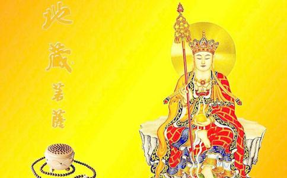

我南京的寓庐，在蓝家庄兰园十六号，周围竹篱，前后二门。民国二十四年七月间，一天上午，前后门未启，忽一老僧，飘然而来。头戴毗庐帽，身穿海青衣；佛珠十数串，自胸前挂起，环贯垂地，左右两袖佛珠，也一样垂地；气象庄严，珠光璀璨。我问：“老师父从何处来？”“阿弥陀佛！我从安徽九华山来！”“门都未开，何以能进来？”“我有神通，到处可以进来”。随即举示一青色厚册，上有烫金“九华山地藏王菩萨”八个大字，“九华山”三字横书，其余五字直书，四边也系金色，非常光亮。他老人家合掌说道：“我来化缘。”我说：“我来随便写一点好吗？”“我不要钱，我今天特为来和你谈谈”。“老师父何以认识我？”“我有神通，早已认识你。”我注意他青色的帽子很特别。他老人家便说：“这是古时候的帽子，我今年已经一百多岁了。”端凳请他坐，他不肯坐，端茶也不肯饮，只是说：“阿弥陀佛”。
“你是一个有善根的人，与佛有缘。到了四十岁以后，你自己便会想要学佛了；到那时，你就会知道我所说的话了。”“老师父何以知道我？”“人心一切的事，我都知道；各人前生的事，我也知道。你一生二生三生的事，如何如何，我说给你听。但希望你将来好好的修，比前生修得更好。……我看你心中怀疑，劝你切莫怀疑，我是有神通的”。
我当时看到他老人家那样道貌岸然，突如其来的说了这许多话，又连说有神通，我又不明了何谓“神通”，心里确实是在怀疑。正恍惚间，却被他老人家一眼看出，一语道破。
“我不知何谓佛；我母亲和婆婆等信观世音菩萨，我只晓得信观世音菩萨”。
“何谓佛？何谓菩萨？佛菩萨的圣号很多，你到四十岁以后，自然会晓得的。”
“我看你似乎还在怀疑，不甚相信。我来说点实在的事。比方你先生周邦道，在教育部当督学，他的面貌性情，如何如何，我说给你听，你便可相信了”。
“你老人家何以知道他？”
“我老早就知道他，并且随时可以看见他，这就是神通”。
女工孙许二氏在傍搀嘴说：“先生的朋友多，人人会传说，你自然知道呀！”
“好，小孩子总不见得有多少朋友会传说了。我来说说你的小孩。你第四个小孩春堤在你身边，我不必说。大儿春境，次儿春垺，三儿春堰，都在莲花桥小学读书，他们的面貌性情，如何如何，可不是吗？现在总该相信了。你是一个贤妇孝妇，能孝敬父母翁姑，前生对于婆婆有一段特别因缘，所以你能格外的孝顺她。孝字是人生最要紧的，你能尽孝道，是难能可贵的”。
当时五儿春塘尚未出生，卫生院见我大腹便便，以为有问题，不肯负责助产，我心中颇为忧虑。他老人家又说道：“你现在所怀的系男婴，骨干大，所以腹大，切莫着急，没有危险。到了八月某日某时要生，生下来很安隐，一点儿也不会哭。他的性情，如何如何”。“生了五男，以后便生女了。本来你有五男二女，因今生没修好，所以女儿只有一个。此女生时，将有一难，但我会常来看你，保护你，你千万不要怕；不会有生命危险的。你要自己发一愿心，在九华山佛菩萨面前供养灯油，多少随你自己说好了。……你不说，我来告诉你，你能供养灯油一百斤，可保合家平安，生女时毫无危险。”
“二十斤好吗？”
“可以。”他老人家不写在他所拿的厚册上，而随手写一纸条“周杨慧卿供养灯油二十斤。”叫我点三根香，跟他到院子里向西南行礼，他老人家将纸条焚化说：“九华山已经知道了。”我看他老人家进出，脚步轻快如飞，毫无声响，心里很是奇异！但不晓得甚么道理。只问：“老师父何以知道我的姓名？”
“我已一再说了我有神通”。
“我来缴钱给老师父”。
“我一文不收，一文不过手，你送清油来就是。你自己送来的话，我会亲自出来接待你；如派人的话，则我自己不出来。你可叫她（指孙氏，她是安徽巢县人），她晓得，告诉她放在某殿便是”。（当时写了殿名，抗战期间，家室迁徙，此条惜已失去。）
许氏又搀嘴说：“说不要钱，油还不是一样要钱的吗？”
“你晓得甚么啊？你的前身是甚么啊？可怜你，我不愿说；你太太是个好人，我是特来和她讲话的，你不要多说话。”
“时间不早了，你先生快要下班回来了。他的脾气很急躁，以为我是普通化缘的和尚，要钱的和尚，一定骂你骂我。你不要生气，我也不生气。他的心肠是好的，脾气发完，便没有事。去年有个上海人，冒称你先生的朋友，骗了你一笔钱，他不是骂得你很厉害吗？那笔钱是你前生欠他的，给了他顶好，你不要再流泪难过”。（我为此事，确常流泪难过。）
外子在京，虽常至支那内学院，亲近其师周少犹老居士，并施赀刻经，为母墓乞铭于宜黄大师欧阳竟无先生；铭中有云：“……旋转三千，唯有经力。邦道毋惑，勇猛功德；吾为母铭，已生极乐国。”但未尝听经，未闻佛法，未解僧义。又为当时“破除迷信”之观念所“惑”，思想矛盾；且因去年有人骗我的钱，以为我总是受人欺弄的。回来之后，未问情由，果然生气，说不应该随便写捐，一般和尚多是以化缘为名，而自饱自利的。
他老人家笑笑的说：“我老早晓得你要生气的，你不要骂我，也不要骂你太太，将来还要她来度你助你呢！阿弥陀佛！阿弥陀佛！”
许氏送他老人家出门，一出门外，便没看见踪影了。她回来告诉我：“老师父出去便没有看见了，不晓得甚么道理”。我因此事，悲恼万分，又真不晓得甚么道理？老师父所说的话，也不敢和外子细谈。不过他老人家的衣冠珠屦，声音笑貌，一言一语，我都深深地刻镂在我的脑海里。
是年八月某日某时，五儿春塘果然出生，生下来便静静地睡，未闻啼声，母子也都平安。二十六年正月，小女春垣生，我患腹膜炎，情势颇剧，医治月余，始转危为安。这些事实，和老师父当日所说的话，都完全符合。
抗战军兴，匆促离京返赣。二十七年一月，外子奉部令兼长国立第三中学，举家由瑞金迁居贵州铜仁。三十年春，外子转任考试院参事，到陪都重庆去了，我母子仍住铜仁。我想到我婆婆弃养，将近十年，心里非常难过，一想即哭。是年九月，我四十初度后，更加想念，常常想报婆恩。有人说，想报婆恩要拜佛，念血盆经。道教万飞云女士说她来教我念，但要拜她为师。不知怎的，我不大愿意，三推四约，终究没有去她家。三十一年三月间，一夕梦见两巨僧；甲披袈裟，偏袒右肩，两耳垂肩；乙穿海青衣，均跣足。乙进门，呼我姓名，问我藏汉柏所制之罗汉珠尚存在否？（此为外子视学河南时在嵩山中岳庙老僧处得来的）。甲说：“你不要着急，将来有机会，我为你介绍介绍。”我不知介绍甚么，只随口说：“请师父留心”。到了六月十九日，在铜仁东岳庙作观音会时，忽有人高声说，“皈依三宝”，“皈依三宝”，说了三四声。彼此问谁说的话，都说听见了，但不知为谁，又不知何谓“皈依三宝”。后请示于宽岸师，始略知三皈依之意义。我等请求皈依，他又不愿，说：“抗战期间，逃难不暇，皈依甚么，将来到普陀山去皈依好了”。再三请求，他才勉强答应，说：“我是不愿你们皈依，恐怕佛菩萨要你们皈依了。”于是临时草草，举行皈依仪式。这是我皈依三宝之始，四十岁以后会信佛学佛，于此已经证验。但老师父数年前所说的话，当时却已遗忘，没有忆起。
皈依后，宽岸师教我念大悲咒。再请教念金刚经，他不肯，说：“你不懂，何必念。”一夕，梦一老和尚教我念弥陀经，念完后，见有船自空中飞过，我惊问：“船何以会飞？”老和尚说：“这是不易见之物”。再看，则飞船不见，老和尚也不见，手中仅有弥陀经一卷；及醒，则弥陀经也没有了，细想老和尚的容貌神气，和在京寓所遇见的，十分相像。自此以后，便常常忆起当年的老和尚了。
次晨，宽岸师来，我以昨晚梦读弥陀经之事告之，并询何谓弥陀经，承他约略的说明了一下。是日下午晒书，堰儿发现张默君先生印赠之佛经一本。（南京的书籍均未带出，此本不知如何夹了出来，也是殊胜因缘）。金刚经、弥陀经、无量寿经、心经、大悲咒等，都汇列其中。我欢喜踊跃，遂发心念经念咒，早晚有常课，乐此不疲。
外子于抗战期间，发心念诵摩利支天经，周少犹老居士则函嘱念诵弥陀及观音圣号；至重庆后，亲炙戴季陶先生，受其影响，信佛之念渐坚。选择若干佛经，先行圈点，后寄至铜仁给我。在南昌家设佛堂，常和我共同瞻礼。来台后，因龙健老之介，同皈依南华虚云老法师；并同为李老居士雪庐师之常随弟子，听经学佛，颇能精进。这是他学佛因缘之大概。四十二年七月，地藏王菩萨圣诞，雪师以地藏王菩萨像数十帧赠外子。我看见像中衣冠珠屦。与二十四年南京寓所见之九华百岁老僧相仿佛，不过面貌较为年轻，手中多一锡杖而已。于是回想以前所谈示所证验之种种事实，原原本本，告诉外子。外子悚惕跃起，谓：“如此希有灵迹，当系地藏王菩萨化身。为何不早日告诉我？使我负罪至今？为着你发菩提大愿，我亦知止有定，一德一心，随同修持，这不是你已度我助我吗？”因此，恭敬礼拜，深切忏悔！
十二月间，台中宝善寺请白圣法师讲“地藏菩萨本愿经”。法师系在九华披剃的，讲经时，常谈地藏王菩萨示迹故事；经中亦屡言供养瞻礼之道，或造塔寺，或塑画像，或燃油灯。因念及前尘往事，亦本本原原，详以奉述。并问九华有无如此神采年逾百岁老和尚？法师说：“我在九华多年，百余之老和尚，从未闻未见，此定系地藏王菩萨化身。他拿着一本厚册给你看了烫金的封面几个大字，不肯打开来给你写捐，行步又那样轻飘，这就是一种不可思议的示现。地藏王菩萨常有化身出游的灵迹，附近各处的人，多能津津乐道。”
经此一问，可以说是得到了个相当可靠的比证，即可以证明十八年前之事迹，迥异寻常！证明地藏王菩萨之化身，不可思议。当时“肉眼不识圣人”，“肉眼不识佛菩萨”，致错过人生难于遭遇之机缘，未能多问因果，多请开示；而且冒渎尊严，致获罪戾；真是悔之已晚，百身莫赎！于是外子和我，敬谨于宝善寺地藏王菩萨座前，献供清油廿斤，聊偿区区夙愿。“至诚恳恻，等一痛切；五体投地，求哀礼忏”。容俟海宇澄清，当更偕诣九华山上，“悲恋瞻礼”，以祈遮止业障，回向法界也！日月居诸，自去岁礼忏迄今，又倏将一年了。证略记其本末，坦白忠实，以告同修。并恭引“本愿经”见闻利益品世尊偈云：
“吾观地藏威神力，恒河沙劫说难尽，见闻瞻礼一念间，利益人天无量事。”
“欲修无上菩提者，乃至出离三界苦，是人既发大悲心，先当瞻礼大士像；一切诸愿速成就，永无业障能遮止。”
大愿地藏王菩萨化身欤！
出自《地藏菩萨现代灵感录》
民国四十三年十一月九日记于台中
周杨慧卿